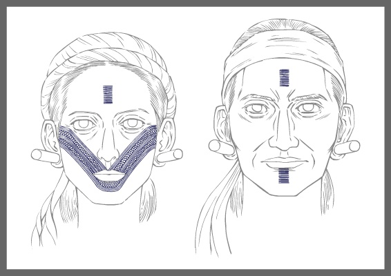
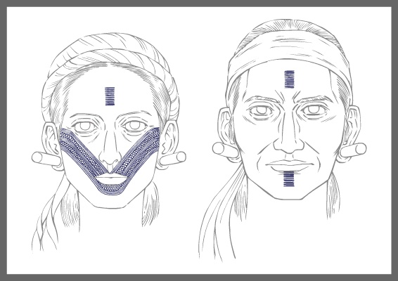
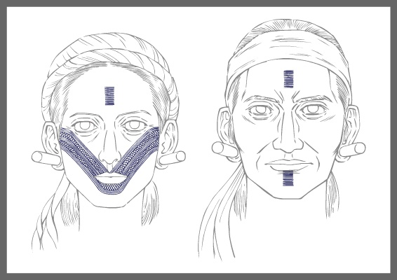

文化特質

編織
能力精緻
狩獵
紋面對於男子而言，是成年的標誌也是勇武的象徵。對於女子，則是善於織布，泰雅族正以其精緻的織布聞名於世 。事實上，除了美觀、避邪，代表了女子的善織、男子的勇武以外，
文面也是泰雅族死後認祖歸宗的標誌。
 
編織能力精緻
狩獵
紋面對於男子而言，是成年的標誌也是勇武的象徵。對於女子，則是善於織布，泰雅族正以其精緻的織布聞名於世 。事實上，除了美觀、避邪，代表了女子的善織、男子的勇武以外，文面也是泰雅族死後認祖歸宗的標誌。

編織能力精緻
狩獵
紋面對於男子而言，是成年的標誌也是勇武的象徵。對於女子，則是善於織布，泰雅族正以其精緻的織布聞名於世 。事實上，除了美觀、避邪，代表了女子的善織、男子的勇武以外，文面也是泰雅族死後認祖歸宗的標誌。